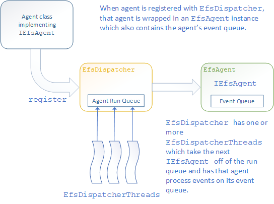
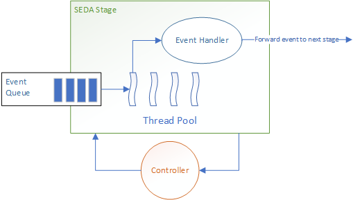

Package org.efs.dispatcher
Dispatcher forwards
events to
agents in an effectively
single-threaded manner. This introduction explains what an
event and agent are, how dispatcher forwards events to agents,
and how agents are effectively single-threaded.
Design Goals
- To provide a framework which allows the developer to have a multi-threaded application but in a single-threaded manner. No need for synchronization, locks, conditions, and dealing with dead locks or race conditions.
-
To make the framework easy to understand and easy to use.
There are no restrictions placed on the developer.
IEfsAgentandIEfsEventare marker interfaces. It is entirely up to the developer to decide how an agent and event are implemented. - Shift developer focus from threads to agents which do the value-added work. An agent is defined by the events it receives and/or the events it posts.
-
To strictly limit thread creation. Because a computer has
a fixed number of cores, the more threads running on a
computer, the greater the contention between threads for
core access. Threads are created at application start as
part of
EfsDispatchers and are not accessible by the application. - To provide sufficient documenting how to use the dispatcher framework through explanation and coding examples.
Definitions
-
Event: Any class implementing the
IEfsEventmarker interface. An event's purpose is to transfer information, requests, and replies between agents.
An event class should be immutable but this is not enforced. -
Agent: Any class implementing the
IEfsAgentinterface. This interface has a single methodname()which returns a non-null, non-empty, unique agent name. Uniqueness is limited to the JVM. - Dispatcher: Class used to forward events to agents.
Dispatcher Coding example
The coding example follows onIEfsAgent's coding
example. The application is a financial application
responsible for buying and selling equity stocks using
proprietary algorithms (algos for short). The algo class
MakeMoneyAlgo implements IEfsAgent interface
and processes IEfsEvent-derived events
NewOrderEvent, CancelOrderEvent, and
ConfigUpdateEvent.
import org.efs.dispatcher.EfsDispatcher;
import org.efs.dispatcher.IEfsAgent;
public final class AlgoApplication {
private static final String DISPATCHERS_CONFIG_FILE = "./conf/dispatchers.conf";
private static final String ALGO_DISPATCHER_NAME = "AlgoDispatcher";
private final CountDownLatch mDoneSignal;
public static void main(final String[] args) {
// Dispatchers are defined as typesafe configurations stored in file named above.
// See EfsDispatcher javadocs for more on how to create dispatchers.
// NOTE: dispatchers *must* be created prior to creating agents.
// Note: this configuration contains a dispatcher named "AlgoDispatcher".
EfsDispatcher.loadDispatchersConfig(DISPATCHERS_CONFIG_FILE);
// Create make money algo instance and assign it to a dispatcher.
final IEfsAgent algo = new MakeMoneyAlgo();
EfsDispatcher.register(algo, ALGO_DISPATCHER_NAME);
// Class OrderBusInterface takes new and cancel order events off a network bus and posts
// them to the make money algo. This is done as follow:
//
// EfsDispatcher(MakeMoneyAlgo::onNewOrder, newOrderEvent, mAlgo);
//
// where newOrderEvent was taken off the wire and mAlgo is algo instance based to
// OrderBusInterface constructor.
final OrderBusInterface orderBus = new OrderBusInterface(algo);
// Wait here for application to be shut down.
try {
mDoneSignal().await();
}
catch (InterruptedException interrupt) {}
// Deregister agent from its dispatcher before shutting down the application.
EfsDispatcher.deregister(algo);
//NOTE: dispatchers cannot be shut down. Once started, they continue running for
// application's lifetime.
}
}Under the covers
The following diagrams show howEfsDispatcher and
application agents interact. These diagrams go over an agent's
run states:
-
IDLE: agent's event queue is empty. -
READY: agent's event queue is not empty and agent is posted to its dispatcher's run queue. Again, this agent appears only once on that run queue. -
RUNNING: agent is acquired by a dispatcher thread and is processing its event queue.
Agent Registration
Dispatching an Event to an Agent
Upon registering, an agent starts life in the
idle state.
Now that the agent has an event in its event queue, it is
moved to the
ready
state. Because a ready EfsAgent appears on its
dispatcher's run queue only one time that means that
only one dispatcher thread is able to acquire that agent. This
fact is what make agents effectively single threaded.
Agent Processing Events

When an agent is acquired by a dispatcher thread, the agent
moves to the
running
state and begins processing its event queue.
Dispatching Events
So far this documentation describes howEfsDispatcher.dispath works but not how an application
decides to which IEfsAgent(s) an IEfsEvent
should be dispatched. Two possible solutions are:
-
Hard-code event delivery. After creating an event, call
EfsDispatcher.dispatch(targetAgent::onEvent, event, targetAgent. This is a tightly coupled solution requiring code change to send the event to a different agent or different callback. On the other hand, tight coupling is the fastest way to get an event from its source to target. -
Map an event class name (not the class itself) to
a list or set or
IEfsAgent,Consumerpairs. Forwarding an event means looking up the event in the map and dispatching the event to each of the agent, callback pairs. This is a loosely coupled technique where source and target are independent of each other. The target agent decides what events it receives and the callback method for that event. This loose coupling increases the event transmission time with the map lookup. It also requires providing thread safety for the event distribution map. The simplest solution there is to use a lock to protect the map but that raises the risk of a thread attempting to acquire the lock losing its core, greatly increasing event delivery latency. A low latency solution to this mapping is not provided here.
Comparison with Existing Concurrency Frameworks
LMAX Disruptor
LMAX Disruptor has excellent thread and memory discipline. The following diagram gives a good overview on how Disruptor operates:

I think of Disruptor as a conveyor belt (the Disruptor ring buffer) with threads assigned to different stages along the conveyor belt, providing value-added work on the conveyor belt items as they pass by. This conveyor belt contains a fixed number of slots. So Disruptor limits threads to those working on the conveyor belt and limits memory to conveyor belt slots. Disruptor is thread-centric
The main differences between Dispatcher and Disruptor are:
- Disruptor ring buffer is homogenous. Dispatcher allows for heterogenous events.
- Disruptor ring buffer contains mutable elements. This means that ring buffer elements are created once at application start-up and re-used throughout application lifetime. This minimizes object instantiation which, in turn, lowers need for garbage collection. Dispatcher encourages creation of new events. You could implement an event pool to support re-use but that is up to you.
- Disruptor supports element processing in one direction only. An element is copied into the next available slot and processed by threads in stage ordering. Dispatcher allows events to arrive at the agent from multiple sources.
I have found Disruptor to be useful for "sink" applications only where data is coming in one end, placed in to the ring buffer, and processed to completion by stage threads. It does not work for applications are receiving events from multiple sources and event processing is focused on coordinating responses to these events. That said, if you are developing a "sink" application, then LMAX Disruptor should be considered.
Staged Event-Driven Architecture (SEDA)
SEDA is similar to Dispatcher but with a more sophisticated control structure with respect to event queues and event processing.
The controller provides is the heart of a SEDA stage and performs:
- admission control: whether to admit an event to the event queue, and event queue ordering.
- run-time control: update stage scheduling parameters and load management.
SEDA's focus is on resource management, adjusting parameters so that flow event flow meets design limits. Dispatcher provides no control mechanisms. That is left to the user if they have the need.
-
ClassDescriptionBuilder for constructing
EfsDispatcherinstance.A dispatcher is either stopped, started, or failed to start.Enumerates the supported efs dispatcher thread types.A dispatcher thread watches a givenrun queueforEfsAgentinstances ready to run, attempting to acquire the next ready agent.A dispatcher thread is either not running, idle (waiting for an available efs agent) or busy (running an efs agent).This interface solves the problem of start up and shutting down from a non-efs thread.Dispatcher behavior interface.This class is used when an agent posting an event to a second agent expecting a reply to its event.Exception thrown when adispatcher threadfails to start.